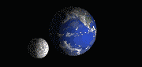

Moon and earth movement

ms
Make a graphical simulation of the movement of moon and earth, based on a set of (hourly) images IMG00.gif, IMG01.gif, ..., IMG23.gif
- Define a variable
i(which we will use to identify a specific image) -
Write a function
showNextImage()which shows the next image (by increasing the variablei). After IMG23.gif is shown, we start again with IMG00.gif. -
Use a timing function that executes the function
showNextImage()repeatedly with a delay of 100ms (= the initial value of the slider) -
When the range slider is changed, the simulation should continue with the new delay value
TIP: Use theclearInterval()method and restart the repeated execution ofshowNextImage()with the new delay value
REMARK: Use arrow functions where possible!